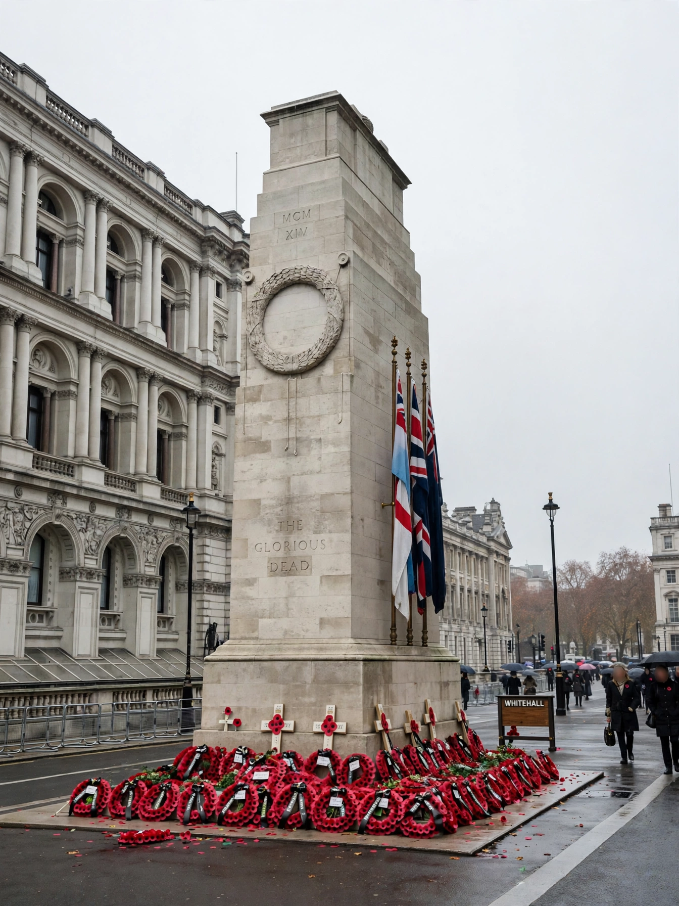

CenotaphA cenotaph is an empty tomb or monument erected in honour of a person or group of people whose remains are elsewhere. It can also be the initial tomb for a person who has since been reinterred elsewhere, or a tomb alternative often used for war dead whose bodies were not recovered.
Cenotaphs were common in the ancient world — many were built in Egypt, Greece and Rome — and in Britain and Europe from the Renaissance, honouring individuals buried in family vaults or abroad.
After the First World War, cenotaphs became the focus of national remembrance. Edwin Lutyens's Cenotaph in Whitehall, London — first a temporary wood-and-plaster structure for the 1919 peace parade, rebuilt in Portland stone in 1920 — deliberately bears no religious symbols and the words "The Glorious Dead"; it anchors the annual Remembrance Sunday service. Lutyens designed many others, including Manchester and Southampton, and similar memorials stand across the Commonwealth, in Hong Kong, Toronto, Sydney (the Martin Place cenotaph) and elsewhere.
Examples include the Alamo Cenotaph in Texas, the cenotaph to Sigmund Freud, and the Hiroshima Cenotaph in Peace Memorial Park.